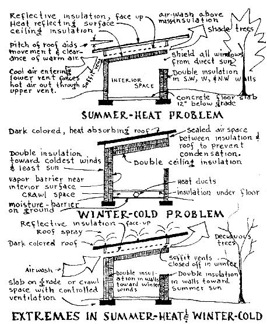
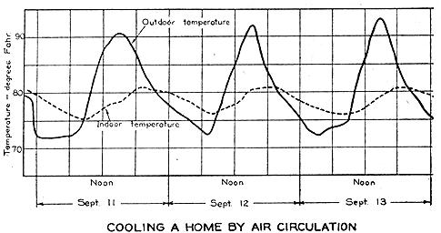
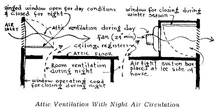
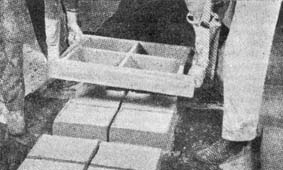
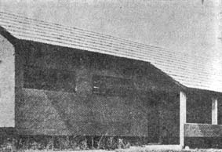
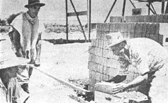

Since 1952 refrigerant air-cooling has come into its own in this country. This was the year that mass-produced home air conditioning units suddenly appeared on the market. The 20 companies sold 250 million dollars worth of equipment and were forced to turn down 100,000 customers. Now there are over 70 companies producing air conditioning units, with an increase in output of 500%. Loaning agency figures indicate that 40% of new homes have included some form of central air conditioner. We hear more and more about Heat Pumps, Combination-unit Air Conditioners, Dehumidifiers, Package-split-system Units, and Evaporative Coolers.
Costs run high for all this air-conditioned comfort. In a survey conducted by the National Association of Home Builders it was found that the cost of installing an average-sized air-conditioner in an average-sized house came to $1308. The operating expenses exceed $70 per summer season. And the Heat Pump, avowed king of year-round air-conditioners, costs from $2500 up to install.
In this chapter I have no intention of discussing the possible advantages of one type of air-conditioner over another. In my opinion, they are all too expensive and inefficient; and totally unnecessary where even the most elementary rules of good planning are respected. The design of a residential cooling system should not have to meet the same physiological requirements as the design of a heating system. Whereas heating systems must produce an indoor temperature of at least 70 degrees F. (regardless of the outside temperature), the cooling system need only supply a drop in temperature of 10 to 20 degrees below that of the outside. Mechanical air-conditioners produce greater cooling differentials and thus are a "real injury to health," according to the American Public Health Association: "Heavy sweating in a hot outside temperature leaves moisture in the clothing which greatly increases the possibility of chilling when the body is exposed to a lower indoor temperature."
The mechanistic approach to heating and cooling requirements is based on the assumption of a steady flow of heat. Actually, however, heat flow varies with time of day and of seasons, and is further influenced by site-orientation, building-structure, planting-design, and period of house occupancy. Heating and air conditioning salesmen tend to oversimplify the thermal requirements for homes, but never mention the fact that heating and cooling needs are of a temporary and local nature. As with electric fans and lights, the artificial heating-cooling aids that we use should be "space" equipment-employed only when and where needed. One of this country's foremost climatologists, Dr. Paul Siple, summed it up succinctly when he said in his Building Research Advisory Board speech: "Although we have made constant improvements in buildings and have many mechanical developments to our credit, we must admit that some of these improvements, such as air-conditioning, have really been developed in order to rectify errors or inadequacies in basic design." At the same conference the feeling was expressed that our present technical attitude tends to produce buildings which are always "fighting their environment" instead of working with it. Buildings have become over-engineered. Technical facilities are employed to counteract situations which common-sense attention to site, orientation, sun-path, wind-path, and even proper use of vegetation might well prevent.
This specialized, over-mechanization of modern houses has driven us into a vicious circle of equipment-acquisition with no end in sight. For instance, about one-third of a ton of refrigerant is wasted in counteracting the heat generated by a TV set alone (3400 BTU an hour). This amounts to about $200 in first costs of an air conditioner. If one includes the heat generated by the refrigerator, water-heater, and stove, the first costs come to over $300-money wasted before the rest of the room temperatures have been reduced by one-tenth of a degree!
There is only one alternative to this unending purchase of artificial aids to keep the house interior cool; a clear understanding of heat-flow principles, ventilation effects, and cooling requirements. In some instances a form of mechanical ventilation may be called for in a new home; but for the most part natural air conditioning can be relied on, including adequate and well-placed insulation.
It is a known fact that it costs three to five times as much to remove a BTU of heat from a house in summer time as it does to add one in winter. This statement can be better appreciated once it is realized that a black roof-top on a clear summer day can be expected to reach 150 degrees F. in any part of the United States. Roofs receive twice as much heat from the sun as do walls. Unventilated attics have been known to reach temperatures of 175 degrees F. Our first and most obvious reaction to this state of affairs can be summed up in one word: Insulate. Insulation, yes, but which of the 150-odd brands of residential insulation should be applied? Should rigid insulating boards, flexible blanket or batt, loose fill or reflective insulation be used? And summer insulation is known to work in two different ways; it may keep much of the heat from entering the house through the roof; but the heat that does enter is trapped in the attic-there to re-radiate onto sleeping occupants throughout the night. From a summer-cooling point of view, bedroom insulation is unnecessary, and in fact restrictive of optimum summer comfort. A light frame construction which heats rapidly and is hot during the day will also cool rapidly at night and thereby provide better night-time conditions than heavily insulated construction. In winter, the rapid response of lightweight construction to heating operates favorably, and during sunny days this type of construction is warmer than insulated construction; but lightweight construction cannot retain heat so well, and is colder than insulated construction on winter mornings. For hot summer conditions, daytimeliving areas (living room, dining room, kitchen) should be of well insulated construction to retard the rapid rise of temperatures indoors during the day. For evening-living areas and bedrooms, uninsulated construction would permit more rapid cooling at night.
In accounting for summer-day, summer-night, winter-day and winter-night heating and cooling requirements, compromise-situations are inevitable. Yet we can bring into play many natural air conditioning factors such as solar orientation, overhang, ventilation, window-type, and shading devices. The National Association of Home Builders, at their Air-Conditioned Village in Austin, Texas, showed that a shift of a house by only seven degrees from South to West practically nullified the benefit of a 36-inch overhang. In one case, the sun pouring through a large unnecessarily exposed window boosted the heat load by 4,200 BTU an hour and increased air-conditioning operating costs by about 15%.
Roof-pitch is another contributing factor which can greatly influence the efficiency of insulation. Research experts assure us that a perfectly flat roof permits up to 50% more heat gain than a pitched roof on the same site. This is due to failure to get a natural hot-air flow out of the eaves of a flat roof. As much as I personally favor the exposed-beam-and-plank, shed-type building, it must be admitted that the gable attic has a better resistance to heat than does the flat-roof design. The plank-and beam roof is difficult to insulate; when rigid insulation is applied directly under the roofing material, there is always the danger that by thus restricting the passage of heat through the roof, high temperatures will build up and increase the flow of tar on built-up roofs. Ceiling insulation is therefore preferable to roof insulation for this reason. When it is realized that overhead insulation may save up to 90% of heat loss, it becomes obvious that for summer as well as winter day-time living, the top of the living space is the main thing to insulate.
Before one can determine the proper amount and best type insulation to install in his house, he must have some notion as to the maximum winter-heating and summer-cooling requirements of his particular region. If a house is to be built in a region of high summer-heat gain, one set of conditions must be satisfied in order to maintain optimum comfort. In regions where extremes in heat and cold occur, a third set of factors come into operation.
Of the three ways in which heat flows through building materials-convection, conduction and radiation-it is radiation which contributes most significantly to summer heating. On page 3 of the Bureau of Standards circular (listed in bibliography) the following passage appears:
Although air is a very poor conductor of heat, the insulating value of an ordinary air space is rather small, on account of the large transfer of heat by convection and radiation. Radiation is largely responsible for the ineffectiveness of air space bounded by ordinary building materials, such as are found in frame or other hollow walls. The low insulating value is often erroneously attributed to convection; but, as a matter of fact, from 50 to 80 per cent of the heat transfer across air spaces of ordinary sizes takes place by radiation. If the air spaces were bounded by bright metallic surfaces, the transfer of heat by radiation would be greatly diminished, since clean metallic surfaces, such as brick, stone, glass, wood, paper, etc.
Reflective metal foil (copper, aluminum, or steel) costs less than 3 cents a square foot and can be easily installed. One should remember to keep the shiny side out (or up) and leave a ventilated air space inside (or below), and at least 3/4-inch between the foil and the surface it faces. A more expensive but also more highly efficient insulator-aluminum clad, accordion-type material known as Infra Multiple Aluminum Insulation-is manufactured by the Infra Insulation Company, 525 Broadway, N.Y.C. which will send free samples on request.
About 70% of the sun's heat rays can be reflected from the house by installing a white or light-colored roof. A thin layer of quartz gravel or marble chip, backed by aluminum foil on a built-up tar-and-felt roof is by far the best type of surface for regions suffering a high incidence of summer heat. If a layer of porous, crushed-tile chat or crushed coral is placed over the built-up roof, and kept wet during the more extreme periods of summer heat, the house interior will remain cooler for a longer time than if crushed marble is used. When water is used, the roof is cooled by evaporation as well as reflection.
Water-cooled roofs were first experimented with in the late 1930's. At that time the roofs were built perfectly flat and flooded with about 4-inches of water. The system worked amazingly well during the day, keeping out about 80% of the sun's heat. But during the night the warm water radiated heat down into the house. Mosquito-breeding was found to be a further disadvantage of the flooded-roof system. Moreover, the design had to include a roof-structure strong enough to support the great weight of water.
More recent experiments with water-cooled roofs have conclusively demonstrated the effectiveness of water sprays. Ordinary rotating lawn sprinklers are perfectly satisfactory, when placed so as to give complete coverage to the roof area. Another method is to use a perforated pipe along the roof ridge from which the water trickles down-cooling by evaporation as well as reflection. Roof-spray tests were made not long ago at the Universities of Florida and Texas. It was found that water spraying keeps out almost 80% of the sun's heat; every pound of water vaporized removes 1,060 BTU of heat from the roof. The temperature of a roof in Texas was reduced 15 degrees (from 132 to 117) after sprays. Although it was found that the water consumption totaled 10-gallons a month for each square foot of roof, this rate can be reduced by 50% if a thermostat in the roof is set to cut in at 100-degrees F.
Systems of water-cooling go all the way back to 2500 B.C., when the Pharoahs of Egypt employed slaves to fan air over large porous earthen jars filled with water. The water, seeping through the walls of the jars, exposed a large wetted surface which provided evaporative cooling. Early American Indians of the Southwest had similar results when they placed porous earthen jars filled with water in the open doorway. The water which seeped through the jar was quickly evaporated by the dry air, thus cooling both the air blowing into the house and the water in the jar. In Mexico the same system is- used today, using porous earthen jars called "olla."
Pools and fountains can also cool effectively when used indoors. In Iran, for instance, it is common to find pools of running water inside a house which is built semi-underground to escape the solar heat. Ventilating towers are provided overhead, which catch wind from above the earth and divert it across the water pool and into the underground room. It must have been in Iran that architect Frank Lloyd Wright got his brilliant idea for cooling a house he designed in Mexico; during the summer months the sunken fireplace hearth was filled with water; the down-draft air movement from the chimney circulates over this "pool" and cools the living room. This unusual fireplace has a summer-cooling as well as a winter-heating function.
There is a German patent out for storing cool air in cellars. The cooling capacity of the cellar is increased by filling it with crates of crushed rock, which possesses an enormous capacity for absorbing heat. A powerful fan feeds the cool air upstairs during the day, and brings in the cool night-air after sunset.
There are important practical principles that can be learned from those indigenous and oftentimes primitive cultures. For instance, we find that the Arab's tent has slowly evolved throughout the centuries. As a functional shelter-form it reflects and deflects the hottest sun on earth. The Arab tent actually consists of two separate tents. The upper one is white and acts as a reflective layer; the lower one, inside it, is additionally protected by the blanket of moving air in between. As the most basic of all shelter forms, this tent-system also illustrates the two most basic principles of summer cooling; reflective insulation and ventilation. Without ventilation the effect of insulation can be completely nullified and proven inoperative. Insulation and ventilation systems must be designed with each of their respective cooling effects in mind; one system must supplement and reinforce the other. A complete discussion of ventilation-design appears in the following chapter.
This method of night-air-cooling is especially practical in temperate and hot-dry climates, where night-time air temperatures are significantly lower. The temperature of the entire building structure and contents call be lowered to approximately that of the basic night coolness. Then during the day this stored-up cold provides a form of radiant cooling from walls, ceiling, floor and contents.
The attic ventilating fan, or exhaust fan, is the least expensive artificial cooling aid to install and operate. And yet, a properly designed night-air cooling or daytime exhaust system (in combination, of course, with a correctly insulated and ventilated house-shell) can replace in summer comfort the most expensive mechanical air conditioning. In order to maintain fan-cooling competitive in results to air-refrigeration, the fan must be correctly positioned in respect to inlet and outlet openings. In an experiment conducted by Westinghouse Electric Corporation, a 16-inch portable fan was used at a window to suck air into a room. In an adjoining room an identical fan was used to blow air out . Air temperature in the former case was reduced only 8 degrees, whereas in the room where the fan ejected hot air, the temperature fell 14 degrees. To explain. When the fan exhausts air toward the outlet window it picks up additional air from the room. This means that a larger amount of cool air will enter the room from the inlet window. It is also the reason why the fan should be placed a distance of twice the width of the window-opening away from the window. The width of a window or opening should be twice the diameter of the fan blades. (A fan will eject from 50% to 100% more air than it would if placed inside the window frame itself.) In regions where the relative humidity is high, and where there is little difference between day and night temperatures (where night temperatures remain above 750 F.), fans will prove less efficient.
The difficult problem of providing a high U-value (or fast-cooling) wall structure for summer, and a low U-value (or slow-cooling) wall structure for winter, can be solved by the use of fans. Cool night air can be circulated between the studding; walls are insulated with reflective insulation of little mass; air inlets are arranged so that they can be closed in winter if desired, making a dead-air space of fairly high insulation value.
During the day all ceiling registers are closed and air inlet vents open. Fan draws air from one side of the attic and forces it out at the opposite side. When outside air temperature drops below inside temperature, the air inlet vents are closed and ceiling vents opened. Fan draws air from outside room windows, through ceiling registers to attic, and forced out. The night air quickly cools air in the rooms and, during the course of the night, continued operation cools furnishings and interior. The next day, as soon as the attic air temperature exceeds the outside air temperature, ceiling registers are closed, air inlet vents opened, and the cycle repeated.
BIBLIOGRAPHY (books listed in order of importance)
How to Keep Cool: Arthur Carson; Harian Publications, Greenlawn, N.Y.
Design of Insulated Buildings for Various Climates: T. S. Rogers
Application of Climatic Data to House Design: Housing and Home Finance Agency, Washington, D. C.
Air Conditioning for California Homes: Woods & Raber; U. of California, Berkeley, Calif.
Factors Affecting Heat Transmission Through Insulated Walls: Rowley & Lund; Bulletin No. 1-4, U. of Minnesota
Thermal Insulation of Buildings: Bureau of Standards Circular No.37C
Insulate and Air Condition: Conklin & Watkins; Arco Publishing Co., New York 17, N. Y. Condensation, Heat and Vapor Flow: Technical Bulletin No. 38, National Housing Agency, Washington, D. C.
Cooling Effect of a Roof Spray on a Ceramic House: Clay Products Ass'n., Austin, Texas
Heating, Ventilating, Air Conditioning Guide: American Society of Heating and Ventilating Engineers, New York, N.Y.
When the ordinary person hears of "earth block" construction, he may imagine something primitive, something perhaps antedating the Stone Age. Actually, the earth block construction I wish to discuss is as modern as the formica sink top.
One of the really primitive methods of earth-wall construction is "wattle-and-daub," in which mud plaster is applied to both sides of a framework of woven reeds or brush supported by posts or poles. Shrinkage cracks in this thin wall are common, requiring almost constant maintenance.
In the "cob" method, a wall of mud and straw rises without any forms or molds. A "paring iron" is then used to trim the wall true and straight.
In California the building codes, which apparently were devised to protect the industry rather than comfort the home owner or advance architecture, disapprove of all plain earth-wall construction. The "earth-nogging" method, accordingly, uses monolithic filler or earth blocks between wood, concrete, or steel framing methods. A large percentage of new earth-wall construction in California is of this compromise type.
Apart from restrictive building codes, however, years of trial and error in earth constructions have culminated in newer systems of machine-compacted blocks and stabilized soil-cement.
Generally speaking there are two classes of earth-wall construction-puddled and tamped. In the former a molecular aggregation of earth particles is achieved with a liquid medium-a puddling process. In the second the earth particles are compacted by the use of compression-a tamping process. Adobe blocks are puddled (wet); rammed earth is tamped (dry).
Whether puddled or tamped, the earth may be stabilized or unstabilized. The common stabilizer used in the puddling process is bitumen (mineral pitch or asphalt, or some of the semi-solid tars), while that employed in tamping is usually ordinary cement.
Finally, earth may be precast into blocks or cast into form in situ . Walls of the owner-built home can, therefore, be puddled or tamped, stabilized or unstabilized, precast or made in situ .
One's choice of system depends upon a host of factors, such as design, building code, type of soil, facilities, equipment, and workers available.
It has been found that practically any soil can be somehow used in earthwall construction. A soil which proves unsuitable for building by one method may be entirely satisfactory for another. For instance, a soil used in a poured adobe wall may shrink and crack, but the same soil may prove satisfactory for adobe blocks, since the blocks are "pre-shrunk" before being placed in the wall. Also in tamped earth methods, consolidation of earth particles reduces shrinkage.
The sandy-clay adobe soil (with at least 30% sand and not less than 50% clay and silt) of the arid Southwest is usually considered ideal for puddled earthwall construction. It is the clay that provides compression strength and the sand that reduces shrinkage and cracking, by lowering the moisture absorption. Adobe blocks are molded from clay in a "plastic" state, often with a moisture content as high as 30% (15%-18% moisture content is considered optimum). Straw binder is sometimes used to reduce cracking in unstabilized blocks, the straw being cut into lengths of from 4 to 8 inches and evenly distributed throughout the mass. About 150 lbs. of straw should be used to make 1000 blocks (4 X 12 X 18 inches). Very little fiber decomposition occurs in the adobe block; blocks in the Southwest over 100 years old have been found to contain dried grasses in such perfect condition that the species could be identified.
In this country the usual practice is to stabilize, or "water-proof," adobe blocks with an asphalt emulsion. "Bitumul" is the commercial product for this purpose. It is produced by a Standard Oil Co. subsidiary and retails for about 25 cents a gallon. It would be less expensive to make an unstabilized block and water-proof it on the outside. According to tests conducted by the U. S. Bureau of Standards, stabilizing blocks does not appreciably increase their strength and the insulation value is reduced, since the density of the block is increased by the stabilizing process.
The Australian Commonwealth Experimental Building Station devised a set of wooden adobe block forms that are as good as can be found anywhere. As soon as the adobe mud is hand-molded into the form, the form is picked up and placed alongside for the next forming. Blocks should be kept in their original position for at least 2-3 days to harden sufficiently for handling. They should then be stacked on edge, with air spaces between, in a sheltered curing area for about three weeks before using. Blocks with a high clay content should be cured more slowly.
Adobe mixing by hand is slow and tedious. Some type of mechanical mixer can certainly be used to advantage. The best type is the pug, dough, or plaster mixer. Concrete mixers are generally not considered satisfactory unless modified with blades or baffles to break up the material as the drum revolves.
Adobe block production can be substantially speeded by using a large rectangular wooden frame one brick deep. The dimensions of its sides are in multiples of the breadth and length of the block. It is filled with packed adobe earth and leveled off. Then the block sizes are cut into the mass of earth with a knife drawn along a straight edge.
Bitumen stabilization is commonly used nowadays to make the earth blocks resistant to water penetration. This type of asphalt emulsion mixes freely with soil of moderate to high clay content, as well as with water. During the mixing process the water carries the bitumen into close contact with the clay particles, and as the water subsequently evaporates it is replaced by the bitumen. Soils with a high sand content (over 50% sand) should receive from 4 to 6% emulsion by weight, whereas fine clay soils (less than 50% sand) require from 13 to 20% emulsion. Also, the sandy soil will require only 10% liquid to bring the material to a workable state of plasticity whereas the fine clay soil requires up to 20%.
Mortar consisting of the same mix of stabilized earth as that used for making the blocks is recommended for the joints in block construction, so that both will have the same coefficient of expansion: A small amount of cement can be added to the mud mortar, however, to make it set faster and add strength.
At the Research Laboratory, Kansas State College, thorough tests were made on hand-tamped soil-cement blocks. A block structurally far superior to Bureau of Standards testing specimens was made, using a minimum of 7.5% cement to a sandy loam (10% clay) soil. This mix, slightly moistened, was tamped into a form and placed in a moist room for a twoweek curing period.
Several years ago, a Johannesburg, South Africa, block maker invented an unusual machine for molding soil-cement blocks. This ingenious "Landcrete Machine" is hand operated, and a 60-pound pressure on a lever produces 1500 pounds against the block. Two men operating the machine can produce enough blocks in two days to build an average-sized Asian home, that is, nearly 1000 blocks per day. Each block is about five times the size of a red brick and twice as hard to crush. Landcrete blocks have the added feature of being made to interlock so that there is no need for mortar in laying them in the wall.
Structural tests were recently made on identically-proportioned hand and machine compacted soil-cement blocks at Asawasi, Kumasi (Gold Coast). Piers six feet high and 18 inches square were constructed and loaded to failure. It was found that hand-made blocks crushed at 43 lbs. per square inch while machine-made blocks crushed at 121 lbs. per square inch.
Machine-compacted blocks have been found to be structurally far superior to sun-dried blocks as well as hand-compacted soil-cement varieties. So much so, in fact, that it is possible to reduce the outside bearing wall thickness to 6 inches instead of the usual 12 inches. In Colombia, 6-inch earth blocks were used to construct buildings two stories in height. No more than 5% of cement needs to be added to a machine-compacted block.
The soil-cement block machine in use in Colombia (South America) was invented in 1957 at the Inter-American Housing and Planning Center, Bogota. Paul Ramirez, a Chilean engineer and inventor of the Cinva Ram, worked for several years developing a device which would, in his own words ". . . give families of small means a manual tool that will help them build the walls and floors of their houses." The specifications for this tool were difficult to meet. It had to be low-cost so as to be available to house-needy "rural workers, farmers, and other people of small means." It had to be simple to operate and maintain, light and portable. One of the stipulations mentioned in an earlier program was to the effect that the machine should be transportable by burro and repairable in any backwoods blacksmith shop!
The Cinva Ram is a portable, hand-operated press for making block and floor tile, and is available for purchase in North America from the IBEC Housing Corporation, 30 Rockefeller Plaza, New York 10, N.Y. It consists of a metal mold in which damp, stabilized earth is compressed by a piston moved by a hand-operated lever mechanism. As a result of the ingenious lever system, a 70-pound manual pressure produces a compression force of 40,000 lbs., a ratio 20 times better than that of the Landcrete Machine. The blocks are then extruded by a reverse action of the lever and removed to damp-cure for one week. They should be air-cured an additional week before being laid.
When soil-cement mixtures are made, it is of special importance to determine exact sand-clay proportions. One simple test is to first fill a one quart mason jar one-quarter full of the soil sample (the earth should first be screened through a No. 4 sieve-six squares per inch). The jar is then filled with water and a spoonful of common table salt added to speed up the settling of the clay. The jar should then be agitated thoroughly and allowed to settle for one hour. The sand and clay will settle in successive layers, the bottom layer being sand and the top layer clay. Measure the height of the sand and divide it by that of the total of soil settled in the bottom of the jar. This will give the percentage of sand.
Damage usually occurs through dampness at and just above the ground level of an earth wall. This is particularly so in countries where it may freeze in the winter. Earth-wall protection must be provided either through stabilization, applied protective wall covering or design of the structure itself, i.e., by means of damp-proofing courses in the walls, resistive foundations, overhangs, verandas, etc.
Wherever possible I would recommend a building design and wall system which does not require applied coverings of a protective nature. Even the best covering is subject to occasional repair and constant maintenance. Also, great care must be observed in applying a protective covering, lest it fail to bond to the wall or in use disintegrate with continued freezing and weathering.
The most common mistake in applying protective finishes to earth walls is made when the finish is applied before the wall has completely "dried out." The presence of moisture in the wall, and through the finish, will soften the wall at the point of bondage and failure is certain to take place. Some sort of mechanical bond, such as wire mesh, is always recommended. Magdiel places single strand wires across each layer of wall section as it is being built. Then when the wall is completed, he attaches chicken wire to both sides of the wall, secured by the tie wires previously set. The wall is then plastered inside and stuccoed outside.
For the sake of economy it would be good to dispense with the wire mesh if possible. For a long time I wondered how it was that Africans achieved such excellent results without wire mesh, whereas in this country all sorts of mechanical precautions must be observed to insure a good bond. The answer is that in Africa the proportion of cement to sand is in the nature of 1:12, plus a 5 to 10% admixture to the plaster, whereas we are accustomed to using a 1:3 proportion and about 10 lbs. of hydrated lime to each bag of cement. Apparently the coating of a strong material (cement and lime) over a weaker material (earth) is basically in error. Differences in expansion and contraction are apt to cause cracking, breaking of the bond, and ultimate failure. The 4,000 rammed earth homes built in India (mentioned in the previous chapter) were all successfully protected with a weak stucco composed of a 1:15 cement-sand mixture applied over a cement wash of 1:3 cement-water undercoating bond.
Possibly the most ancient of all wall finishes is Dagga-Mud plaster. A good quality of Dagga plaster will contain enough fine sand to let the plaster dry without checking. The 3 parts of sand and 1 of clay should be screened through an ordinary fly screen. Sometimes lime (1-8%), cement (10%), or even asphalt emulsion (1 gal. to 100 lbs. of dry soil) is added to the Dagga. The wall is first dampened; then a primer coat of plaster is applied. It must be kept damp during the early curing period. Two thin coats are usually applied.
In Southern Rhodesia rammed earth walls are often sprayed with a bitumastic emulsion and, when tacky, are "harled" with clean sharp sand and thrown against the wall. A cement wash is then applied. It has been found that a coat of asphalt-base aluminum paint will bond very well to asphalt-stabilized earth walls. Aluminum flakes in the paint lie flat and overlap, thus preventing leaching-through of the asphalt in the wall. A finish of oil paint can then be applied.
Linseed oil is a very successful and widely used protective covering for earth walls. Two or three brush coats should be applied, followed by one or two coats of household paint, if desired, for interior finish. "Dusting" of interior walls can be eliminated by first applying a home-made waterproof glue. This transpiration application is made of 6 parts cottage cheese and 1 part quicklime, with sufficient water to make it flow smoothly. The use of cottage cheese for glue sizing may sound a bit odd, but it must be remembered that most of the original research on rammed earth finishes (especially by the University of South Dakota) had in mind inexpensive construction for farmers. This research group even developed a buttermilk paint; 4-1/2 lbs. of white cement to 1 gallon of buttermilk. Two coats should be applied over a glue-sizing primer coat.
And experimenters at the University of Colorado had the grain farmer in mind when they developed a flour and water covering; 30 lbs. of flour and 50 gallons of water are cooked to a creamy consistency and then added to a mixture of the same soil that is used in the walls. Then more water is added to thin it down.
Professor Kirkham's bulletin describes the type of "brush stucco" he developed for both inside and outside treatment of his $887.80 house. His two-coat stucco is very cheap, does not crack, and is absolutely waterproof. It should be applied with a stiff brush.
Place a cake of laundry soap (stearic acid soap) in a three gallon bucket and fill the bucket with cool water. Then take the cake of soap in your hands and rub the soap (as you would to wash your hands) until the water becomes quite soapy. This soapy water is used instead of plain water in mixing the stucco. Next, place four pint cupfuls of portland cement (4 lbs.) into another three gallon bucket and to this add four pint cupfuls of fine sand. Then, using a small wooden paddle, stir until the cement and sand are well mixed. Then add the soap water and keep stirring until the mixture becomes a stiff paste which is applied directly to the wall .
. . . After the paste has been on the wall for 24 hours the surface is painted (washed) with a copper sulphate solution which is obtained by adding a quarter of a pound of copper sulphate crystals to three gallons of water.
BIBLIOGRAPHY (books listed in order of importance)
How to Build Your Own Home of Earth: Kirkham, Oklahoma A & M, Stillwater, Okla., Nov., 1946
Building Materials and Structures Report: B. M. 578, National Bureau of Standards, 1941
Paints and Plasters for Rammed Earth Walls: Patty, Dept. of Agricultural Engineering, Brookings, S. D.
Adobe Construction: University of California, Bulletin 472
|
 problems of seasons |
 Removal of Adobe Molds (Half-Sized Blocks) |
 6-inch thick Landcrete Block Structure, Gold Coast (Ghana) |
|
 Cinva Ram Block Production in Mexico |
 |
 |